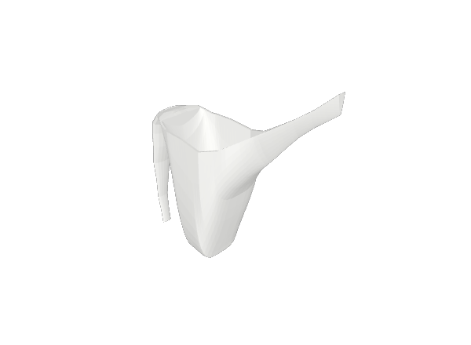

From human video
to robot learning.
We are The Simsons. We turn egocentric videos of people handling everyday objects into simulation-ready data: object meshes, object and hand motion, and robot policies trained on them.
This page collects our projects. First up: our entry to the NVIDIA Video-to-Data Challenge 2026.
NVIDIA Video-to-Data Challenge 2026 · Track 3
Ego2Sim: egocentric video to simulated manipulation
The NVIDIA Video-to-Data (V2D) Challenge ran alongside CoRL 2026, with the winners announced on 12 November 2026. Our team finished 17th of 47 on the final Track 3 leaderboard.
Track 3 starts from short videos, filmed by a camera on a person's head, of that person picking up and moving everyday objects: pots, cups, a watering can, a dust pan. The goal is to teach a robot hand in simulation to do the same thing. The score is how closely the objects the robot moves in simulation follow the way the person moved them in the video.

Our final scores
Code
Our code is available for review in the-simsons/ego2sim-nvidia-v2d.
How it works
From the video alone, our Ego2Sim pipeline reconstructs each object's 3D shape and its motion (6-DoF trajectory) and the person's hand motion, retargets the hands onto floating Sharpa Wave robot hands, and trains one reinforcement-learning policy per video in simulation (FlashSAC in FlashCHORD).
Our pipeline used the Video-to-Data challenge pipeline as a baseline.
- Stereo depthSGBM on the undistorted head cameras, and FoundationStereo depth for object tracking.
- SegmentationSAM 2 masks for every object and hand, prompted from object detections and WiLoR hands.
- Depth fusion & camera motionMoGe depth fused with stereo, and stereo visual odometry for the head.
- Hands3D MANO hands per frame, repaired, with occluded grasps carried along with the object.
- Object meshesAgentSTAR: an AI agent models each object from simple shapes in Blender, checked against the video. The best mesh is kept per object.
- 6-DoF object trackingFoundationPose on FoundationStereo depth with 16 pose hypotheses and a static start.
- Simulation referenceHands retargeted to floating Sharpa Wave hands, a table support, all objects in one scene.
- Reference cleaningSymmetric spins removed, look-alike flips unwrapped, physics settle, overlapping objects pushed apart.
- PoliciesOne FlashSAC policy per episode, best checkpoint by ADD-AUC over 64 simulated worlds.
Reconstructed Objects
Our object reconstruction placed 11th of 47 on the challenge's object-shape leaderboard, with our shapes on average just 0.29 cm from the true object surfaces.
Simulation needs a clean 3D model of every object, and building one directly from video depth tends to give noisy, incomplete surfaces. So our AgentSTAR harness has an AI agent model each object the way a 3D artist would. It builds the object from simple shapes such as cylinders and boxes in Blender, and compares its renders with the video until they match. The result is a clean, real-size model that behaves correctly in the physics simulator.
Click one to rotate it in 3D.




Hand tracking
Our hand tracking is a substantial improvement over the baseline.
It cuts the 3D error of the hand joints by more than five times, and more than doubles accuracy when checked from a camera it never sees. The baseline gets the shape of the hand right, but places hands about 26 cm too far from the camera because it estimates depth from a single image. Our tracker brings that error down to under 1 cm.
Our multi-view hand tracker builds on HaWoR, a hand-tracking model. It moves each hand onto keypoints triangulated from two head cameras, and switches to a second model, HaMeR, on any frame where HaWoR's hand disagrees with the image. The challenge data provides three head cameras, one colour and two monochrome, which makes this triangulation possible.
As the video shows, the hands can look slightly too large from the head camera. Resizing them to match is our next improvement.
3D joint error
Held-out camera accuracy
Show as a table
| Method | 3D joint error (mm) | Depth bias (mm) | Held-out PCK@10 | Coverage |
|---|---|---|---|---|
| V2D baseline (HaMeR + MoGe depth) | 263.4 | +259.6 | 13.8 % | 100 % |
| HaWoR | 121.1 | +109.3 | 21.1 % | 93.7 % |
| EgoFound3R | 119.2 | +107.7 | 16.6 % | 50.0 % (10 fps output) |
| HaWoR + stereo depth | 53.2 | +15.8 | 24.8 % | 93.7 % |
| HaMeR + stereo depth | 49.5 | +6.7 | 23.8 % | 100 % |
| Multi-view tracker + HaMeR fallback (ours) | 47.5 | +7.5 | 33.5 % | 97.9 % |
Policies
For each of the 20 challenge videos, we train a separate policy that controls two simulated robot hands and moves the objects the way the person did.
The policies are trained with reinforcement learning (FlashSAC in FlashCHORD). We tested every pipeline change against motion capture on the public videos first, and our second reconstruction raised tracking accuracy there from 0.77 to 0.83. Scoring each challenge video separately then revealed three weak ones. In one, a spoon had been tracked upside down. In another, the reconstructed hands never reached the objects. In the third, our earlier reconstruction simply did better. Fixing these raised our final ADD-AUC from 0.609 to 0.651.
We also tried a single grasp policy shared across videos, with a separate per-video policy for the wrists. Grasps transferred between known videos, but it did not beat the per-video policies.
Coming up